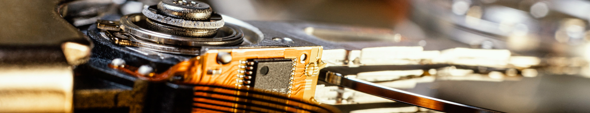
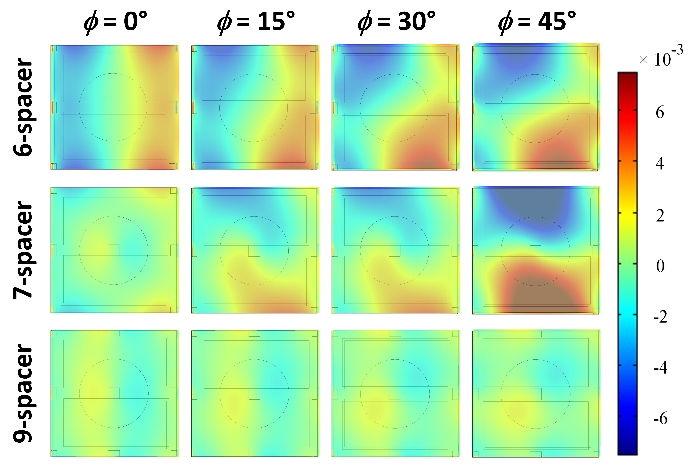
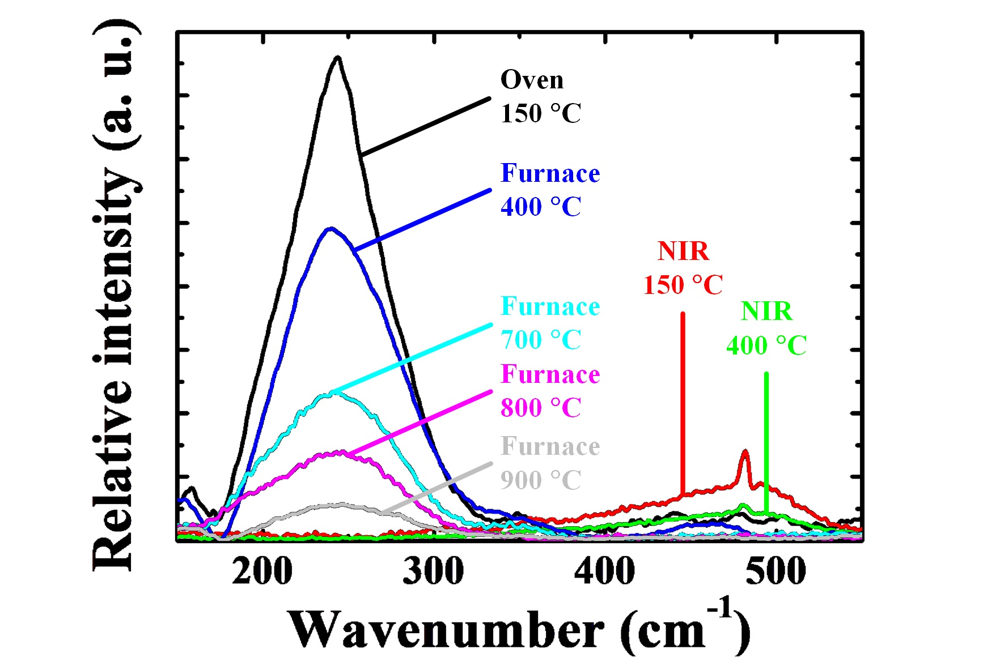
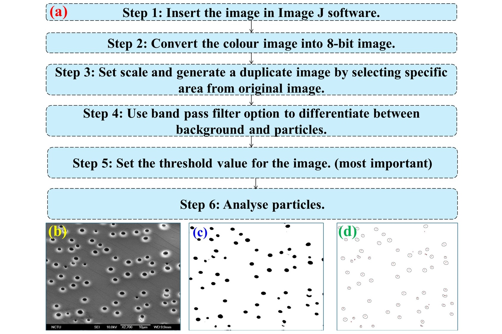

Journal Article
NTHU • Advanced Micro/Nano Manufacturing
Engineering the Future of
Flexible Printronics & Sensing.
We research and innovate direct-write inkjet micro-deposition, high-performance sintering kinetics, high-sensitivity capacitive tactile sensor architectures, and wearable multi-sensor system integration.
50+
Journal & Conf. Papers
15+
Precision Facilities
3
Core Pillars
100%
Offline Ready

About Our Laboratory
The Flexible Printronics Lab
清華大學 軟性印刷電子實驗室 (NTHU Inst. NEMS & Dept. PME)
Micro/Nano Printing Paradigms
Micro and nano additive printing processes replace high-waste photolithographic workflows. By leveraging drop-on-demand inkjet and roll-to-roll compatible fabrication, we achieve environmentally sustainable, high-precision electronic patterning on polymer, elastomer, and paper substrates.
Multidisciplinary Synergies
Our active researchers span mechanical engineering, electronics, nanomaterials, chemistry, and physics. Together, we investigate physical sensor modeling, nanoparticle ink rheology, rapid photonic sintering, and edge embedded readout electronics.
From Science to Translation
Collaborating across NTHU shared cleanrooms and industry leaders (Walsin, CSME, Delta Electronics), our sensors power wearable health monitors, robotic tactile skins, and smart prosthetics.
Core Competencies
Three Strategic Research Pillars
Bridging materials science, precision processing, and integrated cyber-physical hardware.
Transducer Innovation
Capacitive Tactile & Metamaterial Devices
Developing ultra-compliant tactile sensors with engineered structural rigidity. By tailoring asymmetric electrode topologies and porous microstructures, we achieve up to six-fold sensitivity magnification and decoupled multi-axis normal/shear force detection.
- Capacitive Tactile Sensors: Asymmetric electrode architectures and reduced rigidity matrices (Sensors & Actuators A).
- Metamaterials & FSS: Inkjet-patterned porous split-ring resonators and stress-tunable frequency-selective surfaces (APL).
- Optical & Display Filters: MEMS-based surface plasmon resonance color filtering and OLED subpixel illumination uniformity.

Clock-type tactile array and flexible capacitive sensor prototype.
Advanced Manufacturing
Sintering Kinetics & Ink Rheology
Substrate thermal budgets restrict post-processing temperatures. We engineer photonic sintering methods (Near-Infrared NIR and Intense Pulsed Light IPL) to densify conductive nanoparticles within milliseconds without degrading underlying flexible polymers.
- Photonic Sintering: Roll-to-roll compatible NIR & IPL rapid curing of copper/silver nanoparticle inks (Micro & Nano Letters).
- Porosity Engineering: Janus porous electrospun nanofibrous architectures and progressive thermal curing dynamics.
- Deposition Fidelity: 2D droplet spreading models and irregular edge completeness quantification (JMM).

Roll-to-roll compatible Near-Infrared (NIR) sintering of metal meshes.
Edge Electronics
Wearable Sensor Arrays & Wireless telemetry
Transforming discrete transducers into robust, field-deployable cyber-physical nodes. We fabricate vertically stacked sensor matrices, low-noise front-end conditioning circuits, and low-power BLE/ESP32 sensor modules for real-time robotic feedback.
- Vertically Stacked Matrices: Quadrupled spatial resolution enhancement over conventional planar layouts.
- Low-Noise Front-End: Active shielding and stray-capacitance cancellation utilizing 24-bit delta-sigma converters.
- Robotic Gripper Telemetry: High-bandwidth tactile feedback for slip detection and delicate object grasping.

Porous microstructure matrix integration for high-density wearable tactile sensing.
Team & Scholars
Members & Researchers
Dedicated researchers from mechanical, electrical, and chemical disciplines.
PI
Principal Investigator
Prof. Cheng-Yao Lo (羅承堯 教授)
Associate Professor, Institute of NEMS & Department of PME, NTHU
chengyao@mx.nthu.edu.tw
Delta Building Rm 313
Prof. Lo directs the Flexible Printronics Laboratory at NTHU. His research focuses on additive micro-droplet fabrication, flexible strain/tactile sensor designs, photonic sintering kinetics, and wearable human-machine interfaces.
Office: +886 3 5162404
Lab: +886 3 5715131 #80128
Fax: +886 3 5745454
Ph.D. Candidate
Pancham (帕滿納)
Janus Porous Tactile Sensing & Nanoparticle Sintering
2nd Prize in 2023 Walsin Poster Competition. Recipient of NTHU Outstanding TA Award.
2021 – Present
Master Candidate
Yu-Wen Chen (陳裕文)
Capacitive Tactile Arrays & Clock-Type Sensors
Honorary Member of Phi Tau Phi Scholastic Honor Society (2025). 1st Place in CSME 2024 Group E02.
2023 – 2025
Master Candidate
Cheng-Chieh Wang (王顗城)
Inkjet Printed Sensor Integration & Readout
Co-author & 1st Place CSME 2024 Award. NSTC Automation Engineering Project.
2023 – Present
Master Candidate
Chen-Hao Hung (洪晨晧)
Sintering Dynamics & Conductive Trace Reliability
1st Place in CSME 2024 Group E02. High-speed photonic sintering kinetics.
2023 – Present
Alumnus (Ph.D. 2016)
Dr. Sheng-Feng Lin (林聖峰)
NIR Non-destructive Optical Inspection
Applied Optics publication on micro-crack wafer inspection through dicing tape.
Ph.D. 2016
Alumnus (M.S. 2019)
Ting-Yi Hsu (許庭譯)
Structural Rigidity & Capacitive Tactile Sensitivity
Published 5-fold sensitivity enhancement in Sensors and Actuators A: Physical (2019). MNC 2018 Best Poster.
M.S. 2019
Alumnus (M.S. 2017)
Li-Wen Wang (王俐雯)
Roll-to-Roll NIR Sintering for Metal Mesh
Published in Micro & Nano Letters (2017). IEEE NEMS 2017 Best Conference Paper Award.
M.S. 2017
Alumnus (M.S. 2016)
Mochtar Chandra (劉建豪)
Vertically Stacked Tactile Sensor Matrices
Quadrupled spatial resolution enhancement in Sensors & Actuators A: Physical (2017).
M.S. 2016
Scholarly Output
Document Center & Publications
Peer-reviewed journal papers, conference proceedings, patents, and defended theses.
Journal Article
Morphology and Conductivity Improvement of Metal Mesh Through Roll-to-Roll-Compatible Near-Infrared Sintering
Journal Article
Vertically Stacked Capacitive Tactile Sensor with More Than Quadrupled Spatial Resolution Enhancement from Planar Arrangement
Journal Article
Inkjet-Patterned Porous Split-Ring Resonator and Its Performance Study on Metamaterial Application
Conference Paper
Morphology and Conductivity Enhancement of Metal Mesh in OLEDs by Near Infrared and Intense Pulse Light
Conference Paper
Advanced Capacitive Tactile Sensor for Up-to-Sixfold Sensitivity Enhancement by Reduced Structural Rigidity
Defended Thesis
Sensitivity Study on Capacitive Tactile Sensors with Various Structural Rigidities (結構剛性於電容式觸覺感測器靈敏度之研究)
Infrastructure
Facilities & Core Equipment
Dedicated research tools and shared instrumentation across NTHU cleanrooms.
Dimatix DMP-2831
Materials Inkjet Printer
Cartridge-based drop-on-demand piezo system for micro-droplet fluid deposition and conductive ink patterning.
NIR Sintering System
Photonic Processing
Roll-to-roll compatible high-power near-infrared source for rapid conductive particle sintering without heat degradation.
Intense Pulsed Light (IPL)
Flash Photonic Annealing
Microsecond xenon flash pulses delivering ultra-high energy densities for copper and silver nanomaterial densification.
Precision Spin Coater
Substrate & Dielectric Prep
Sub-micron dielectric film coating with programmable multi-step acceleration profiles for elastomer membranes.
Precision LCR & Impedance Analyzer
Electrical Characterization
Sub-femtofarad capacitance extraction and frequency response profiling from 20 Hz to 2 MHz.
Optical Profiler & Micro-Mechanical Stage
Surface Metrology
Multi-axis automated micro-force loading stage with 0.1 mN resolution for tactile sensor calibration.
Milestones & Honors
Latest Lab News
Ordered in strict descending chronological sequence (Phase 1 standard).
May 23, 2025
Academic Honor
Y.W. Chen Selected as Honorary Member of Phi Tau Phi
Yu-Wen Chen (陳裕文) was inducted into the prestigious Phi Tau Phi Scholastic Honor Society of the Republic of China for academic distinction.
April 27, 2025
Reunion
Alumni Reunion during NTHU 114th Anniversary
Printronics Lab alumni returned to campus celebrating NTHU's 114th Anniversary and NEMS 23rd Anniversary in Delta Building.
November 16, 2024
Competition Award
1st Place Award in CSME 2024 Annual Conference
C.C. Wang, C.H. Hung, and Y.W. Chen received 1st Place in Group E02 at the 2024 Chinese Society of Mechanical Engineers Conference.
2023
Honors
P. Pancham Wins 2nd Prize in Walsin Competition & Outstanding TA
P. Pancham received the 2nd Prize in the 2023 Walsin Poster Competition and was conferred the NTHU Outstanding Teaching Assistant Award.
Phase 3 & 3.1 Architecture Demonstration
Authenticated Lab Intranet & Inventory Matrix
Interactive proof-of-concept demonstrating the relational database schema specified in
Website_Upgrade_Plan_v2.md for internal lab operations, chemical tracking, hardware allocations, and SOP compliance.
Local Offline Simulation Active
Table:
precursor_sys • Chemical Entities & Inkjet Printability Metrics| CAS Number (PK) | Chemical / Ink Material | Viscosity (cP) | Surface Tension (mN/m) | Curing Temp (°C) | Storage Temp (°C) | Status / Shelf Life |
|---|---|---|---|---|---|---|
7440-22-4-AG |
Silver Nanoparticle Ink (Novacentrix) | 11.4 | 32.0 | 140 | 4°C | Active (84% Volume) |
7440-50-8-CU |
Copper Formate Precursor Ink | 9.8 | 28.5 | 180 | -20°C | Expires in 18 Days |
9002-89-5-PVA |
Poly(vinyl alcohol) 88% Hydrolyzed | 42.0 | 45.2 | 110 | 25°C | In Stock |
7782-42-5-GR |
Graphene Oxide Dispersion (Water) | 15.2 | 48.0 | 160 | 4°C | Active (92% Volume) |
63148-62-9-PDMS |
Sylgard 184 Silicone Elastomer Base | 3500.0 | 21.5 | 80 | 25°C | Ample Stock |
Table:
mcu_inventory • Network Nodes, Bus Logic, & Allocation| MAC Address (PK) | Controller / Node Type | Logic Level (V) | ADC Resolution | Current Draw (mA) | Allocation / Project ID |
|---|---|---|---|---|---|
C4:DE:E2:81:4A:10 |
ESP32-S3-WROOM-1 (Dual-Core) | 3.3V | 12-bit SAR | 82.4 | PROJ-TACTILE-01 (Pancham) |
E0:5A:1B:67:92:04 |
nRF52840 BLE 5.2 Dongle | 3.3V | 14-bit SAADC | 14.8 | PROJ-WEARABLE-02 (Y.W. Chen) |
F8:9A:8B:11:34:55 |
TI FDC1004 4-Ch Capacitance Eval | 3.3V (I2C) | 24-bit Delta-Sigma | 3.2 | PROJ-CAPACITIVE-LAB |
30:AE:A4:99:C1:22 |
SAMD21 Cortex-M0+ Mini | 3.3V | 12-bit | 18.5 | General Inventory (Delta 313) |
Table:
substrate_stock • Deposition Z-Offsets & Thermal Budgets| Batch ID (PK) | Substrate Material | Thickness (μm) | Porosity (%) | Glass Transition Tg (°C) | Storage Location |
|---|---|---|---|---|---|
BATCH-PI-2025-04 |
Kapton Polyimide Film (50 HN) | 125.0 | 0.0% | 385°C | Dry Box Cabinet A-2 |
BATCH-JANUS-019 |
Electrospun PVDF-HFP/PVA Mat | 85.4 | 68.5% | 115°C | Cleanroom Desiccator 3 |
BATCH-PET-OPT-08 |
Optical Grade Toray PET Film | 100.0 | 0.0% | 78°C | Dry Box Cabinet B-1 |
BATCH-PDMS-10-1 |
PDMS Micro-structured Mold 10:1 | 250.0 | 32.0% | -125°C | Room 313 Prep Station |
Table:
hardware_maintenance • Calibration Schedules & Certified Operators| Equipment ID (PK) | Instrument Name | Last Calibrated | Operating Hours | Authorized Operator ID | SOP Training Status |
|---|---|---|---|---|---|
EQ-DMP2831-01 |
Dimatix DMP2831 Inkjet Printer | 2025-08-15 | 1,420 hrs | USER-OP-PANCHAM |
SOP Certified • Passed |
EQ-NIR-SINT-02 |
High-Power NIR Sintering Source | 2025-07-20 | 640 hrs | USER-OP-HUNG |
SOP Certified • Passed |
EQ-LCR-E4980A |
Keysight Precision LCR Meter | 2025-09-01 | 2,890 hrs | USER-OP-CHEN |
Calibrated • Valid |
EQ-SPIN-01 |
Laurell Precision Spin Coater | 2025-04-10 | 850 hrs | USER-OP-ALL |
Calibration Due in 30 Days |
Get in Touch
Contact & Directions
Flexible Printronics Laboratory at National Tsing Hua University
Laboratory Coordinates
We welcome academic collaborations, industrial partnerships, and prospective graduate researchers.
Address
Room 313, Delta Building (台達館313室)
No. 101, Section 2, Kuang-Fu Road, Hsinchu 30013, Taiwan
Electronic Mail (Obfuscated)
Telephone & Fax
PI Office: +886 3 5162404
Student Lab: +886 3 5715131 ext. 80128
Fax: +886 3 5745454
NTHU Delta Building Rm 313
National Tsing Hua University (國立清華大學)
Institute of NanoEngineering and MicroSystems (奈米工程與微系統研究所)
Department of Power Mechanical Engineering (動力機械工程學系)
Institute of NanoEngineering and MicroSystems (奈米工程與微系統研究所)
Department of Power Mechanical Engineering (動力機械工程學系)